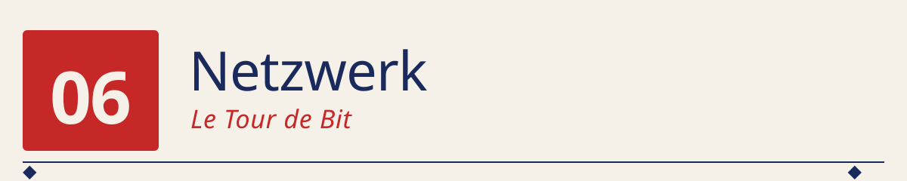
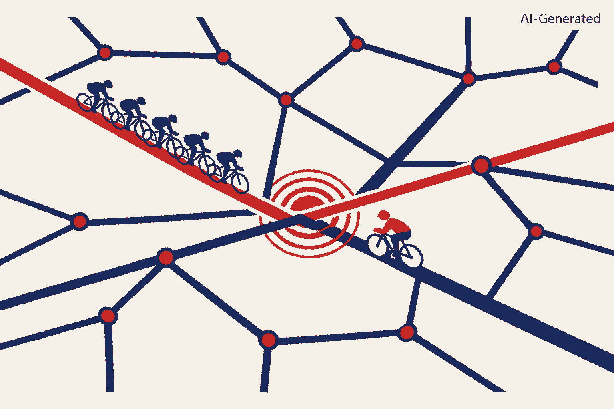

06 · Netzwerk


Straßennetz = Kanal ◆ Fahrer = Sendungen ◆ Kreuzung mit Zusammenprall = Kollision ◆ Peloton = koordinierter Verkehr ◆ Einzelfahrer auf Nebenstraße = erfolgreicher Retry nach Backoff.
──────────◆──────────◆──────────◆──────────◆──────────
Ein einziges Blechkisten-Netz auf sieben Hawaii-Inseln, 1970. Sieben Rechner, ein UHF-Funkkanal, keine Absprache. Und eine Regel, die so simpel klingt, dass man sie beim ersten Hören für einen Scherz hält: „Sende, wenn du etwas hast. Wenn's kollidiert — warte zufällig, dann nochmal." Aus genau dieser Idee wurde in gut 20 Jahren das Internet. Und der mathematische Kern-Effekt — Kanal kollabiert bei Überlast, weil Kollisionen sich selbst verstärken — steckt bis heute in jedem WLAN-Chip.
🌉 Der Anfang: Wie kriegt man mehrere Rechner auf einen Kanal?¶
Am Ende von Kapitel 5 (05_GPU) haben wir gesehen, dass eine einzelne
GPU nicht reicht, um moderne KI-Modelle zu trainieren: GPT-3 lief auf
etwa 10 000 GPUs parallel. Aber „parallel auf 10 000 GPUs" heißt: die
Rechner müssen sich alle paar Millisekunden über ein Netzwerk
synchronisieren. Ohne Netzwerk kein verteiltes Training. Ohne
verteiltes Training kein GPT-3.
Die klassische Frage: wie funktioniert das eigentlich, dass mehrere Rechner sich ein gemeinsames Medium teilen?
Die Antwort, die wir in diesem Kapitel bauen, ist die einfachste — und historisch die erste, die funktioniert hat: ALOHA, geboren 1970 auf Hawaii. Sie ist zu Netzwerken das, was die 4-Bit-CPU aus Kapitel 1 zu Prozessoren ist: der minimale Prototyp, aus dem alles weitere durch Skalierung und Verfeinerung entstanden ist.
🕰️ Historischer Kontext¶
| Jahr | Ereignis | Bedeutung |
|---|---|---|
| 1970–71 | ALOHAnet (Norman Abramson, University of Hawaii) | Sieben Rechner auf verschiedenen Inseln teilen sich einen UHF-Funkkanal. Weltweit erstes funktionierendes Paket-Random-Access-Netz. |
| 1972 | Slotted ALOHA (Larry Roberts, ARPA) | Kleine Regeländerung, doppelter Durchsatz — von 18,4 % auf 36,8 %. |
| 1973 | Metcalfe liest ALOHA-Paper | Und sieht: dieselbe Idee funktioniert auf Kupferkabel besser, weil man während des Sendens zuhören kann. |
| 1973/1976 | Ethernet / CSMA/CD (Metcalfe & Boggs, Xerox PARC) | „Höre, bevor du sendest; höre auch, während du sendest; brich bei Kollision sofort ab." Maximaler Durchsatz: 90 %+. |
| 1974 | TCP/IP (Vint Cerf, Bob Kahn) | Eine zweite Schicht über dem physischen Kanal: Adressierung, Fragmentierung, Retransmit. Ende-zu-Ende statt Nachbar-zu-Nachbar. |
| 1980 | IEEE 802.3 — Ethernet wird Standard | 10 Mbit/s. Damals absurd viel. |
| 1983 | ARPANET wechselt auf TCP/IP | Aus dem Forschungsnetz wird das Internet. |
| 1997 | WLAN 802.11 (CSMA/CA) | Bei Funk ist Collision Detection wieder unmöglich (wie 1970!). Der ALOHA-Kern kehrt zurück. |
| heute | Ethernet 400 GbE, InfiniBand, RDMA | Der GPU-Cluster, auf dem GPT-3 trainiert wurde, benutzt dieselben Grund-Prinzipien: Framing, Kollisionsvermeidung, Retransmit. |
Zwei Beobachtungen:
Erstens, das Muster passt exakt zum Grundtenor von 00_Fundament
und 01_Computing/README.md: Abramson hat ALOHA 1970 gebaut, ohne zu
wissen, ob die Mathematik dahinter aufgeht. Erst hinterher hat Roberts
1972 die geschlossene Formel \(S = G e^{-G}\) dazu geschrieben. Klassischer
Zuse-Weg: erst probieren, dann verstehen.
Zweitens, ALOHA ist bis heute konzeptionell lebendig: jeder WLAN-Chip, jedes Bluetooth-Gerät, jedes LoRaWAN-Modem benutzt eine Variante desselben Grundgedankens. Verändert wurde die Robustheit — nicht der Kern.
🧠 Die Kernidee: probabilistischer Zugriff, mathematisch verstanden¶
Der ganze Trick von ALOHA lässt sich in einem einzigen Verhältnis fassen.
Wir haben einen Kanal. Wir haben Sender, die zufällig verteilte Pakete absenden wollen. Die Frage: wie viele der versuchten Sendungen kommen ohne Kollision durch?
Sei \(G\) die angebotene Last, gemessen in „Sendeversuche pro Paketlänge". Sei \(S\) der erfolgreiche Durchsatz, ebenfalls in Paketlängen. Dann gilt:
Maxima:
Das Bemerkenswerte ist das Kollapsverhalten bei Überlast: bei \(G > 1\) für Slotted (oder \(G > 0{,}5\) für Pure) sinkt der Durchsatz wieder. Mehr Sendeversuche → mehr Kollisionen → weniger erfolgreich zugestellte Pakete. Ein Kanal, den man zu 100 % füllt, transportiert weniger als einer, den man zu 37 % füllt.
Genau dieses Kollapsverhalten ist der Grund, warum Netzwerke bis heute mit Traffic Shaping und Congestion Control arbeiten. Und es lässt sich in unserer Simulation live sehen.
🧠 Was du baust¶
Ein winziger, aber vollständiger ALOHA-Simulator in reinem Python:
- Eine Kanal-Simulation für Pure ALOHA und Slotted ALOHA. Sender wählen zufällig Sendezeitpunkte; Sendungen, die sich zeitlich überlappen, kollidieren.
- Ein Durchsatz-Scan über eine Reihe von Angeboten \(G\), mit direktem Vergleich Simulation gegen theoretische Kurve.
- Eine ASCII-Zeitachse, auf der man Kollisionen sieht — Balken pro
Sender,
!-Marker bei Kollisionszeitpunkten. - Ein ASCII-Balkenchart der Slotted-ALOHA-Theoriekurve, damit das Maximum bei \(G=1\) optisch sofort sichtbar ist.
Kein PyTorch, keine externen Pakete. Reines Python.
🚀 Schnelleinstieg¶
Die Struktur in src/ und notes/:
src/
├── config.json Simulations-Profile (small | medium | large)
├── aloha.py Pure + Slotted ALOHA + Theoriekurven + ASCII-Rendern
└── test_aloha.py Standalone-Beweis: Sim vs. Theorie, Zeitachse, Chart
notes/
└── ethernet.md Ausblick: von ALOHA über CSMA/CD zu Ethernet, WLAN und TCP/IP
Schritt 0 — die Kernidee ohne Vorwissen verstehen (kein PyTorch, kein Netz):
Die Ausgabe liefert drei Blöcke:
- Tabelle simuliert vs. theoretisch für 8 Lastpunkte. Kernwerte (verifiziert):
- \(G=0{,}50\): Pure sim=0,197 vs. th=0,184 ✓ | Slotted sim=0,320 vs. th=0,303 ✓
- \(G=1{,}00\): Slotted sim=0,389 vs. th=0,368 ✓ (nahe am 1/e-Maximum)
-
\(G=3{,}00\): Pure sim=0,009 — der Kanal ist praktisch tot.
-
ASCII-Zeitachse eines Mini-Laufs mit 3 Sendern, 2 Paketen, 6 Sendungen. Man sieht 4 Kollisionen (
X) und 2 Erfolge (=). -
ASCII-Balkenchart der Kurve \(S = G \cdot e^{-G}\) von \(G=0{,}1\) bis \(G=4{,}0\) — mit deutlich sichtbarem Maximum bei \(G=1{,}0\).
Schritt 1 — den historischen Ausblick lesen:
Zeigt in vier Verbesserungsschritten, wie aus dem 18-%-Kanal von 1970 das heutige Internet wurde: ALOHA → Slotted ALOHA → CSMA → CSMA/CD (Ethernet) → CSMA/CA (WLAN) → TCP/IP → 400 GbE / RDMA für GPU-Cluster.
Alle Python-Programme laufen mit Python 3.7+ ohne externe Abhängigkeiten.
❗ Ehrliche Diskussion: Was zeigt dieses Modell — und was nicht?¶
Was es korrekt zeigt:
- Den Kollaps bei Überlast — Kollisionen fressen den Durchsatz überproportional.
- Die Verdopplung durch Slotting — dass eine winzige Regel- Änderung (nur zu Slot-Grenzen senden) den Durchsatz doppelt so hoch bringt.
- Den Zusammenhang zwischen Wahrscheinlichkeit und Systemverhalten — ALOHA ist eines der ersten Beispiele in der Informatik, in denen ein probabilistischer Ansatz einem deterministischen (Time-Division-Multiplex, Master-Slave) klar überlegen ist, sobald die Zahl der Teilnehmer wächst.
Was es bewusst nicht zeigt:
- CSMA/CD — den eigentlichen Ethernet-Mechanismus. Der ist im
Nachfolge-Notes-Dokument (
notes/ethernet.md) erklärt, aber nicht simuliert. Der Grund ist derselbe wie überall in dieser Reihe: der einfache Fall (ALOHA) enthält bereits alle Grundideen, Skalierung ist danach Verbesserung derselben Idee. - TCP/IP-Schichten — Adressierung, Fragmentierung, Congestion Control. Das ist eine ganze eigene Ebene über dem physischen Kanal und würde den Rahmen sprengen. Für einen ausführlichen Weg dorthin ist Kurose/Ross oder Tanenbaum die richtige Adresse.
- Realistisches Backoff-Verhalten — echte ALOHA-Systeme benutzen einen zufälligen Backoff-Wartezeitraum, damit kollidierte Sender sich statistisch entzerren. Unser Simulator arbeitet mit unabhängig gezogenen Sendezeitpunkten, was mathematisch äquivalent zum „steady-state"-Verhalten bei perfektem Backoff ist.
📝 Übungen¶
1. Der Kollaps in einer Zeile. Warum sinkt der Slotted-ALOHA- Durchsatz für \(G > 1\)? Rechne die Ableitung \(\frac{dS}{dG}\) nach — bei welchem \(G\) wird sie null? (Antwort: \(S = Ge^{-G}\), \(\frac{dS}{dG} = e^{-G}(1-G)\), null bei \(G=1\). Maximum bei \(G=1\): \(S = 1/e\).)
2. Senderdichte variieren. Wie ändert sich der simulierte Durchsatz, wenn du 50 Sender mit je 20 Paketen durch 10 Sender mit je 100 Paketen ersetzt (gleiches \(G\))? Sollte sich nichts ändern — verifiziere das. Wenn doch etwas passiert, hast du einen Bug gefunden.
3. Backoff bauen. Erweitere aloha.py um eine „Retransmit"-
Logik: wenn ein Paket kollidiert, wird es nach einer zufälligen
Wartezeit erneut gesendet. Wie ändert sich der beobachtete Durchsatz?
(Erwartung: qualitativ dieselbe Kurve, quantitativ näher an der
Steady-State-Theorie.)
4. Vom ALOHA-Kollaps zum CSMA-Sprung. Formuliere in ein bis zwei Sätzen, warum „vor dem Senden lauschen" (CSMA) den Maximaldurchsatz gegenüber Slotted ALOHA verbessert. Bei welcher Größe wird die Ausbreitungszeit des Signals wichtig? (Antwort: sobald die Signal-Laufzeit im Verhältnis zur Paketlänge nicht mehr klein ist — genau der Grund, warum Abramson 1970 auf Hawaii kein CSMA implementieren konnte.)
5. WLAN als moderner ALOHA-Nachfahre. Wo im WLAN-802.11-Protokoll findet man die alte ALOHA-Struktur wieder? (Stichwort: „CSMA/CA mit exponentiellem Backoff" — die Kollisionsvermeidung ist zwar verbessert, aber der probabilistische Grundansatz ist identisch.)
🧭 Wo steht ALOHA heute?¶
Kurz gesagt: die reine ALOHA-Regel wird heute in kaum einem System mehr benutzt — sie ist überall durch CSMA-Varianten ersetzt. Aber die Idee — probabilistischer Zugriff auf einen geteilten Kanal, mit zufälligem Backoff bei Kollisionen — steckt in jedem Funknetz:
- WLAN (802.11): CSMA/CA + exponentielles Backoff. ALOHA ohne Detection-Trick.
- Bluetooth: Slotted-ähnlich, mit Master-koordinierten Slots, aber im Advertisement-Modus (Broadcast) reine ALOHA-Kollisionslogik.
- LoRaWAN (Low-Power WAN für IoT): Pure ALOHA. Bewusst gewählt, weil die Sensoren so selten senden, dass \(G\) klein bleibt und die 18 % Maximum kein Problem sind.
- RFID (kontaktlose Karten): Slotted ALOHA für die Anti-Kollisions- Phase — mehrere Karten im Feld eines Lesegeräts finden sich per ALOHA-Ähnlichem Protokoll.
Man kann fast sagen: wo Rechner ohne Kabel kommunizieren, lebt Abramsons Idee weiter.
🧠 Abschließende Bemerkungen¶
Wenn du dir dieses Kapitel angesehen hast, hast du gesehen, dass Netzwerke nicht mit Adressen, Ports oder TCP anfangen. Sie fangen mit einer viel elementareren Frage an: wie kann ein Sender wissen, ob sein Paket angekommen ist? Und die einfachste ehrliche Antwort ist ALOHAs: „Ich weiss es nicht — ich sende es einfach und hoffe." Dass diese Haltung mit der richtigen Regel (Slotting, Sensing, Detection, Backoff) Netze mit 90 % Auslastung tragen kann, ist eines der schönsten Ergebnisse der frühen Informatik.
Zwei Dinge, die man aus diesem Kapitel mitnimmt:
-
Probabilistische Protokolle skalieren erstaunlich weit. Ein Kanal ohne Absprache, ohne Master, ohne Zeitplan — wenn die Beteiligten sich statistisch fair verhalten, kommt am Ende mehr durch als bei perfekter Koordination mit hohem Overhead.
-
Die Kollapskurve ist überall. Nicht nur bei ALOHA. Genau dieselbe „mehr angeboten → weniger geliefert"-Dynamik findet man bei TCP-Congestion, bei Web-Servern unter Last, sogar bei einem Kreuzungsverkehr um 8 Uhr morgens. Der ALOHA-Simulator ist ein Miniatur-Modell für ein Muster, das in vielen komplexen Systemen wieder auftaucht.
🚀 Nächster Teil: von der Bitübertragung zur Bedeutung¶
Damit ist die klassische „Wie funktioniert ein Computer?"-Frage aus Teil 1 vollständig beantwortet:
Wir haben Rechner gebaut, Programme geschrieben, sie parallel laufen lassen und über einen Kanal miteinander sprechen lassen. Aber: kein einziges der Bytes, die wir hier gesendet haben, wusste, ob es eine Frage, eine Antwort oder ein Wörterbucheintrag ist. Ein Rechner kann jetzt Text übertragen — aber er versteht ihn nicht.
Um genau das zu ändern, brauchen wir eine ganz andere Art von Programm:
eines, das nicht ausgeführt wird, sondern trainiert wird. Damit
beginnt Teil 2 (02_MachineIntelligence/): 60 Jahre neuronale
Netze, in denen aus einem einzelnen Neuron (Rosenblatt 1958) über MLP,
CNN, Word2Vec, RNN, Seq2Seq und Transformer schrittweise die Fähigkeit
entsteht, Bedeutung aus Text zu extrahieren. Und danach in Teil 3
(03_LanguageModelling/) die letzten zehn Jahre: aus einem Sprachmodell
wird ein Assistent, aus dem Assistenten ein reasoning-fähiges Modell,
aus dem reasoning-fähigen Modell ein Agent.
Der ganze Bogen läuft ab hier — auf denselben Netzwerken, auf denen wir gerade unser erstes Paket gesendet haben, nur mit deutlich mehr Bandbreite.
📚 Referenzen¶
- Abramson, N. (1970). The ALOHA System — Another Alternative for Computer Communications. AFIPS. Das Ur-Paper.
- Roberts, L. G. (1972). ALOHA Packet System With and Without Slots and Capture. ACM SIGCOMM Computer Communication Review. Die Slotted- Verbesserung mit geschlossener Formel.
- Metcalfe, R. M., & Boggs, D. R. (1976). Ethernet: Distributed Packet Switching for Local Computer Networks. Communications of the ACM.
- Kleinrock, L., & Tobagi, F. A. (1975). Packet Switching in Radio Channels: Part I — Carrier Sense Multiple-Access Modes. IEEE Transactions on Communications.
- Cerf, V., & Kahn, R. (1974). A Protocol for Packet Network Intercommunication. IEEE Transactions on Communications. TCP/IP- Grundlage.
- Tanenbaum, A. S., & Wetherall, D. J. (2011). Computer Networks (5. Aufl.). Der Standard-Lehrtext, der ALOHA in Kap. 4 ausführlich behandelt.